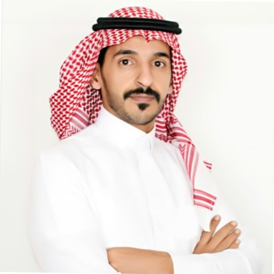

الحوكمة وأمانات المجالس واللجان
رفع جودة الحوكمة وتحويل أعمال المجالس واللجان إلى دورة قرار ومتابعة قابلة للقياس.
- تقييم النضج
- الهياكل والمواثيق
- مصفوفات الصلاحيات
- قياس الأداء ومتابعة القرارات
نبني نموذجًا مهنيًا يجمع الحوكمة، أمانات المجالس واللجان، المخاطر والالتزام، التحليل القانوني والتنظيمي، التحقيقات المهنية، وحوكمة الذكاء الاصطناعي؛ بهدف تحويل المتطلبات إلى ممارسات قابلة للتنفيذ والقياس.
ليست قائمة خدمات عامة؛ بل مسارات تخصصية يجري تطوير منهجيات وأدوات وفريق مناسب لكل منها بصورة تدريجية.
رفع جودة الحوكمة وتحويل أعمال المجالس واللجان إلى دورة قرار ومتابعة قابلة للقياس.
ربط المتطلبات التنظيمية بالضوابط والإجراءات ومؤشرات المتابعة.
تحليل الأنظمة واللوائح والسياسات وقياس أثرها على أعمال المنشأة وقراراتها.
منهجيات منظمة لتحليل الوقائع والأدلة وبناء تقارير مهنية ضمن نطاق الاختصاص والترخيص.
بناء أطر مسؤولة لاستخدام الذكاء الاصطناعي وإدارة مخاطره ومسؤولياته المؤسسية.
الهدف طويل المدى ليس ممارسة فردية، بل فريق يجمع خبرات متكاملة ويُشكّل بحسب احتياج كل مشروع، مع بقاء مسؤولية المنهجية والجودة واضحة.
تحديد نطاق المشروع، تصميم المنهجية، إدارة العلاقة مع العميل، ومراجعة المخرجات والجودة.
خبرات قانونية وتنظيمية ومخاطر والتزام وتدقيق ومحاسبة وتحقيقات يتم إشراكها وفق طبيعة المهمة.
تطوير الأنظمة ولوحات المعلومات وتحليل البيانات وأدوات الذكاء الاصطناعي التي تدعم التنفيذ المهني.

تقوم الهوية المهنية لمرتكز على الجمع بين الخبرة القانونية والحوكمية والتنظيمية مع بناء أدوات عملية وتقنية تساعد المنشآت على الانتقال من المتطلبات النظرية إلى التنفيذ والمتابعة والقياس.
خلال السنوات القادمة، يجري تطوير مرتكز كعمل جماعي: قيادة مهنية ثابتة، شبكة خبرات متخصصة، وأدوات رقمية تخدم الفريق وتزيد جودة وكفاءة العمل.
مقالات وأدلة ومنهجيات عملية في الحوكمة والمخاطر والالتزام والأنظمة والتقنية، ليصبح الموقع مرجعًا مهنيًا لا مجرد واجهة تعريفية.
الوصول إلى المقالات المنشورة حاليًا، مع خطة لإعادة تنظيمها حسب المسارات الخمسة.
نماذج وأدلة قابلة للتطبيق في أعمال اللجان والالتزام والسياسات والحوكمة.
أطر لتقييم النضج والفجوات وجودة الممارسات بصورة قابلة للقياس والمقارنة.
مسار تطوير تدريجي لأدوات تحليل محاضر اللجان، متابعة القرارات، فحص السياسات، تتبع الالتزامات التنظيمية، وتقييم حوكمة الذكاء الاصطناعي. تُستخدم التقنية لدعم الخبير والفريق، لا لإلغاء المراجعة المهنية.
للتواصل بشأن تعاون مهني، مشروع بحثي، مبادرة معرفية، أو فرصة لبناء فريق متخصص في أحد مسارات مرتكز.